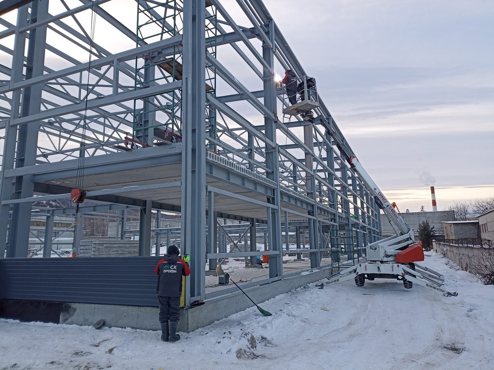
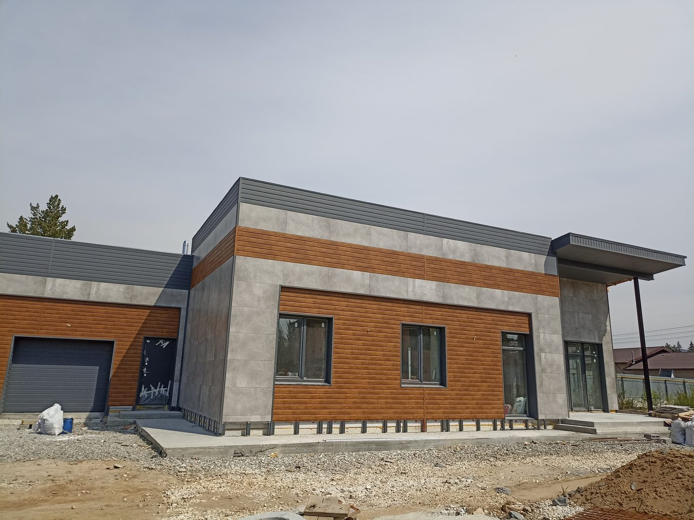
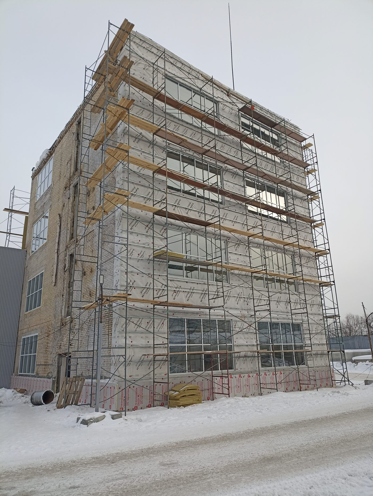
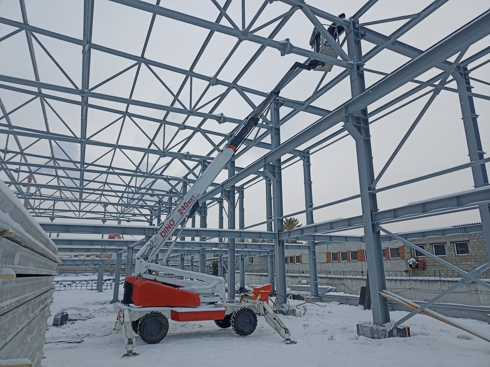

Промышленное и гражданское строительство в Златоусте, Миассе и по всей Челябинской области. Один договор — все этапы.
Строим производственные цеха, склады холодные и тёплые, ангары, СТО и автомойки. Технология — металлокаркас с утеплёнными сэндвич-панелями, плоские кровли с ПВХ-мембраной.
Берём на себя весь цикл: проектирование с партнёром-проектировщиком, фундаменты любого типа (свой сваебой), монтаж каркаса, инженерные коммуникации и сдачу объекта.


Магазины, торговые центры, офисные и административные здания, общественные объекты. Металлокаркас с сэндвич-панелями, в том числе в комбинации со шлакоблоком.
Работаем с сетевыми и локальными заказчиками, соблюдаем нормы проектирования общественных зданий и сроки открытия.
Строим каменные дома: газоблок (инси-блок), кирпич, шлакоблок, в том числе с облицовочным кирпичом. Любые типы фундаментов — свайные, плитные, ленточные.
Кровля на выбор: металлочерепица, профнастил, мягкая или фальцевая кровля, ПВХ-мембрана. Инженерные коммуникации и благоустройство — в той же смете.


Реконструкция и усиление конструкций зданий, замена и ремонт кровли. Для промышленных и общественных зданий — сэндвич-панели и ПВХ-мембраны, преимущественно плоские кровли. Для коттеджей — металлочерепица, фальц, мягкая кровля.
Устройство бетонных полов с топпингом для общественных и промышленных зданий. Установка окон и ворот — секционных и промышленных.


Подготовка строительной площадки: планировка, вывоз и завоз грунтов, отсыпка, установка временного забора, ввод временного электроснабжения. Помощь в закупе и доставке материалов для всего комплекса работ.
Выполняем собственным экскаватором и КамАЗом-манипулятором — без наценки посредников.